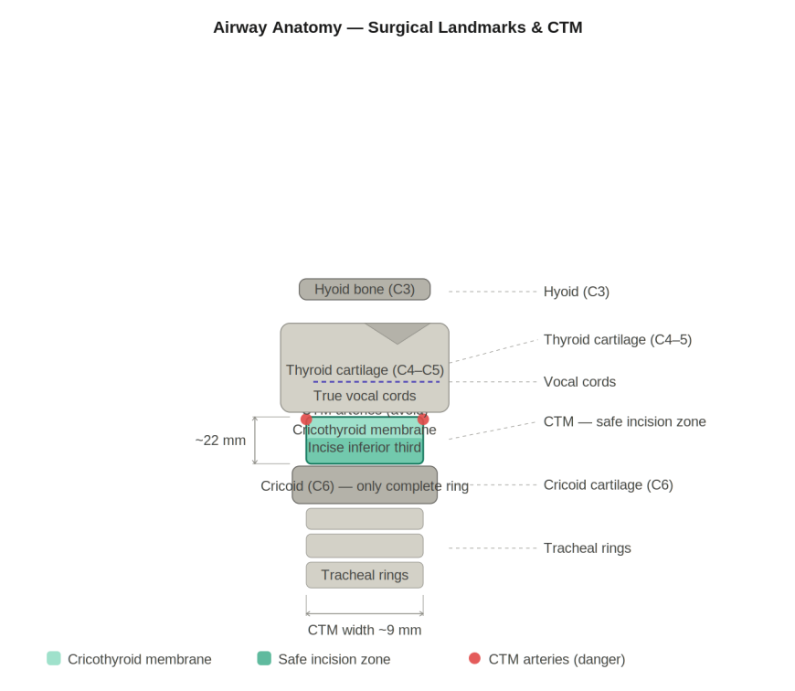

Calibrated Resource
This monograph consolidates the essential anesthesia and perioperative care knowledge required for surgical residents. It bridges the gap between pure anesthetic theory and the practical application required on the surgical floor and in the intensive care unit.
Understanding airway anatomy is not just an intubation requisite; it is the foundation for securing an emergency surgical airway. The cricothyroid membrane is the universal target for emergency front-of-neck access.
- Thyroid cartilage: anterior midline, V-shaped, C4–C5 level.
- Cricoid cartilage: only complete tracheal ring, C6; inferior to thyroid cartilage.
- Cricothyroid membrane (CTM): width ~9 mm, height ~22 mm. The superior cricothyroid arteries cross the UPPER border; therefore, you must incise in the INFERIOR THIRD to avoid massive bleeding.
- Right mainstem bronchus: wider, shorter, more vertical (25° from midline). Preferential right-sided endobronchial intubation occurs if the endotracheal tube is advanced too far.
Figure 1: Airway Anatomy & CTM Surgical Landmarks

Airway management relies on predicting difficulty before the patient is apneic. The LEMON score provides a rapid, structured clinical assessment to identify anatomical traits that predict a difficult direct laryngoscopy.
| Letter | Assessment | Difficulty Indicator |
|---|
| L | Look externally | Short neck, large tongue, retrognathia, obesity |
| E | 3-3-2 rule | <3 fingers mouth opening / <3 hyoid-chin / <2 thyromental distance |
| M | Mallampati | Class III or IV |
| O | Obstruction | Mass, haematoma, Ludwig's angina, foreign body |
| N | Neck mobility | Cervical spine injury, ankylosing spondylitis, post-RT |
The Mallampati score correlates the size of the tongue to the pharyngeal volume. A higher class predicts a poorer view during laryngoscopy, quantified by the Cormack-Lehane grading system.
| Mallampati Class | Visible Structures | CL Grade | View at Laryngoscopy |
|---|
| I | Soft palate, uvula, fauces, pillars | 1 | Full glottis visible |
| II | Soft palate, uvula, fauces | 2a | Partial glottis visible |
| III | Soft palate, base of uvula | 2b | Arytenoids only |
| IV | Hard palate only | 3/4 | Epiglottis only / nothing |
Rapid Sequence Induction (RSI) is designed to minimize the time between the loss of protective airway reflexes and the inflation of the endotracheal tube cuff, mitigating aspiration risk in patients with a full stomach.
| Step | Action | Key Detail |
|---|
| 1 | Preoxygenate | 100% O₂ x 3–5 min; SpO₂ target >95%; nasal cannula 15 L/min apnoeic oxygenation |
| 2 | Position | Sniffing position; ear-to-sternal-notch alignment in obese patients |
| 3 | Induction | Propofol 1.5–2 mg/kg (stable) OR ketamine 1–2 mg/kg (haemodynamic instability) |
| 4 | NMB | Suxamethonium 1.5 mg/kg OR rocuronium 1.2 mg/kg (if suxamethonium CI) |
| 5 | Laryngoscopy | Blade tip in vallecula; lift along handle axis; never lever on teeth |
| 6 | Tube | ETT 7.0–7.5 F / 7.5–8.0 M; cuff 20–25 cmH₂O; depth 21 cm F / 23 cm M |
| 7 | Confirm | EtCO₂ waveform (gold standard) + bilateral auscultation |
Board Fact
Safe apnoea time is ~8 min for a healthy adult, but drops to ~2–3 min in obese or pregnant patients. The EtCO₂ waveform is the gold standard for ETT confirmation.
Induction agent selection must be tailored to the patient's immediate hemodynamic status and physiological reserve. Propofol is standard for elective cases, but ketamine or etomidate are critical in trauma or shock.
| Agent | Dose | Mechanism | CVS Effect | Key Feature |
|---|
| Propofol | 1.5–2.5 mg/kg | GABA-A potentiation | MAP ↓ 25–40% | Antiemetic; PRIS >4 mg/kg/h >48h; no analgesia |
| Ketamine | 1–2 mg/kg | NMDA antagonism | HR/BP ↑ | Preferred in haemodynamic instability; bronchodilator; raises ICP/IOP |
| Etomidate | 0.3 mg/kg | GABA-A potentiation | Minimal | Most CVS stable; adrenocortical suppression 24–48h; myoclonus |
| Thiopental | 3–5 mg/kg | Barbiturate GABA-A | BP ↓ | Reduces CMRO₂/ICP; pH 10.8 (necrosis if extravasated) |
Minimum Alveolar Concentration (MAC) measures potency, while the blood:gas partition coefficient dictates the speed of onset and offset (solubility).
| Agent | MAC (%) | Blood:Gas Coeff. | Key Features |
|---|
| Sevoflurane | 2.0 | 0.65 | Smooth induction; paediatric first choice; fast offset; MH trigger |
| Isoflurane | 1.15 | 1.4 | Vasodilation; reduces MAP; MH trigger |
| Desflurane | 6.0 | 0.45 | Fastest onset/offset; airway irritant (not for induction); MH trigger |
| Nitrous oxide | 104 | 0.47 | Cannot provide sole anaesthesia; expands gas cavities; NOT an MH trigger |
Neuromuscular blocking agents are categorized into depolarizing (suxamethonium) and non-depolarizing classes. The advent of Sugammadex has revolutionized the use of rocuronium.
| Agent | Onset | Duration | Reversal | Notes |
|---|
| Suxamethonium | 45–60 sec | 8–12 min | None | Fastest; K⁺ ↑; CI in burns >24h, crush, denervation, MH |
| Rocuronium | 60–90 sec | 30–60 min | Sugammadex | Only NMB reversible at full block (16 mg/kg) |
| Atracurium | 3–5 min | 25–35 min | Neostigmine | Hofmann elimination; renal/hepatic failure safe |
Local anesthetics are the cornerstone of regional anesthesia. Intravascular injection or rapid absorption leads to Local Anesthetic Systemic Toxicity (LAST). Management relies on immediate lipid emulsion therapy.
| Agent | Class | Max Plain | Max + Adr | Key Feature |
|---|
| Lidocaine | Amide | 3 mg/kg | 7 mg/kg | Fastest onset; topical airway; IV antiarrhythmic |
| Bupivacaine | Amide | 2 mg/kg | 2.5 mg/kg | Most cardiotoxic (R-enantiomer) |
| Ropivacaine | Amide | 3 mg/kg | 4 mg/kg | Less cardiotoxic; motor-sparing at low concentrations |
- Layers: skin → subcutaneous → supraspinous → interspinous → ligamentum flavum (Loss of Resistance) → epidural space → dura → arachnoid → subarachnoid (CSF).
- Conus medullaris: Ends at L1–L2 in adults. Safe insertion is restricted to L3–L4 or L4–L5.
- Tuffier's line: reliable crosses L4, serves as a standard bedside landmark.
| Feature | Spinal | Epidural |
|---|
| Target space | Subarachnoid (CSF) | Epidural (fat, veins) |
| Drug volume | 2–3 mL | 10–20 mL bolus |
| Onset | 3–5 min | 15–20 min |
| Duration | Fixed ~2–3 h | Indefinite (catheter) |
| Dermatome | Landmark | Procedure |
|---|
| T4 | Nipple line | Caesarean section |
| T6 | Xiphisternum | Upper abdominal surgery |
| T10 | Umbilicus | Hip/knee replacement, inguinal herniorrhaphy, TURP |
| S1–S3 | Perineum | Anorectal / perineal surgery |
| Agent | Wait Before Block | Wait After Catheter Removal |
|---|
| LMWH prophylactic | 12 hours | 12 hours |
| LMWH therapeutic | 24 hours | 24 hours |
| Warfarin | INR ≤1.4 | After removal |
| Clopidogrel | 7 days | After removal |
| DOACs | 72 hours | 6 hours after removal |
| ASA Class | Description | Mortality |
|---|
| I | Normal healthy | <0.1% |
| II | Mild systemic disease (controlled HTN/DM) | 0.1–0.2% |
| III | Severe systemic disease (COPD, morbid obesity) | 1.8–4.3% |
| IV | Constant threat to life (recent MI, sepsis) | 7.8–23% |
| V | Moribund (ruptured AAA) | Up to 51% |
Pharmacogenetic disorder causing a hypermetabolic crisis. Early recognition hinges on identifying a rising EtCO₂ before overt hyperthermia.
- Gene: RYR1 (ryanodine receptor 1); chromosome 19.
- Triggers: ALL volatile halogenated agents + suxamethonium.
- EARLIEST sign: Rising EtCO₂ despite adequate ventilation.
- Specific Rx: Dantrolene 2.5 mg/kg IV q5min.
Often presents abruptly with profound hypotension and bronchospasm. Neuromuscular blockers are the leading culprits.
- First-line Rx: Adrenaline. IV 50 mcg boluses; IM 0.5 mg (1:1000).
- Tryptase sampling: 3 samples: 1–2h (peak), 4–6h, 24h (baseline).
Apfel factors (1 pt each): female sex / non-smoker / history of PONV or motion sickness / postoperative opioid use.
| Apfel Score | PONV Risk | Minimum Prophylaxis |
|---|
| 1 | ~20% | 1 agent (ondansetron 4 mg) |
| 2 | ~40% | 2 agents |
| 3 | ~60% | 3 agents + consider TIVA |
| 4 | ~80% | 3 agents + TIVA + opioid minimisation |
| Parameter | Target | Rationale |
|---|
| Tidal volume | 6 mL/kg IBW | Prevents volutrauma; reduces mortality |
| Plateau pressure | ≤30 cmH₂O | Prevents barotrauma |
| Driving pressure | ≤15 cmH₂O | Strongest mortality predictor |
| FiO₂ | Lowest for SpO₂ ≥92% | Prevents oxygen toxicity |
| Type | CO | SVR | CVP | First-Line Rx |
|---|
| Hypovolaemic | Low | High | Low | Volume; blood products |
| Distributive (septic) | High | Low | Low | Noradrenaline + source control |
| Cardiogenic | Low | High | High | Dobutamine; restrict fluids |
| Obstructive | Low | High | High | Relieve obstruction |
- Sepsis: SOFA ≥2 from infection.
- Septic shock: Sepsis + vasopressor for MAP ≥65 + lactate >2 mmol/L.
- qSOFA: RR ≥22 / GCS <15 / SBP ≤100. Score ≥2 triggers escalation.
| Stage | Creatinine Criterion | Urine Output Criterion |
|---|
| 1 | ×1.5–1.9 baseline | <0.5 mL/kg/h for 6–12h |
| 2 | ×2.0–2.9 baseline | <0.5 mL/kg/h for ≥12h |
| 3 | ×3.0 OR RRT initiated | <0.3 mL/kg/h for ≥24h |
Emergency RRT (AEIOU): Acidosis, Electrolytes (K+), Intoxication, Overload, Uraemia.
Clinical Pearl
Refeeding syndrome: commencing nutrition after prolonged starvation drives phosphate, K⁺, and Mg²⁺ intracellularly, leading to respiratory muscle failure.
Quick Reference — Critical Numbers & Doses
| Drug / Parameter | Value | Context |
|---|
| Suxamethonium RSI | 1.5 mg/kg IV | Onset 45–60 sec |
| Rocuronium RSI | 1.2 mg/kg IV | Onset 60–90 sec |
| Dantrolene (MH) | 2.5 mg/kg IV | Specific MH treatment |
| Intralipid (LAST) | 1.5 mL/kg IV | 20% lipid emulsion |
| Adrenaline (Anaph) | 50 mcg IV bolus | IM 0.5 mg (1:1000) if no IV |
| Bupivacaine Max | 2 mg/kg | Most cardiotoxic LA |
| ARDSNet TV | 6 mL/kg IBW | Reduces mortality |
| MAP Target | ≥65 mmHg | Septic shock target |